This is documentation for Orange 2.7. For the latest documentation, see Orange 3.
Scatter Plot¶
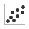A standard scatterplot visualization with explorative analysis and intelligent data visualization enhancements.
Signals¶
- Inputs:
- Examples (ExampleTable)
Input data set.
- Example Subset (ExampleTable)
A subset of data instances from Examples.
- Outputs:
- Selected Examples (ExampleTable)
A subset of examples that user has manually selected from the scatterplot.
- Unselected Examples (ExampleTable)
All other examples (examples not included in the user’s selection).
Description¶
Scatterplot widget provides a standard 2-dimensional scatterplot visualization for both continuous and discrete-valued attributes. The data is displayed as a collection of points, each having the value of X-axis attribute determining the position on the horizontal axis and the value of Y-axis attribute determining the position on the vertical axis. Various properties of the graph, like color, size and shape of the points are controlled through the appropriate setting in the Main pane of the widget, while other (like legends and axis titles, maximum point size and jittering) are set in the Settings pane. A snapshot below shows a scatterplot of an Iris data set, with the size of the points proportional to the value of sepal width attribute, and coloring matching that of the class attribute.
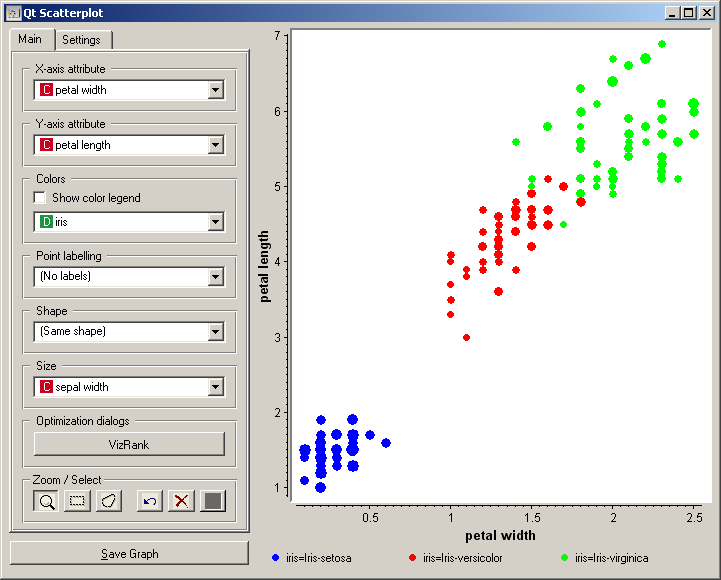In the case of discrete attributes, jittering (Jittering options ) should be used to circumvent the overlap of the points with the same value for both axis, and to obtain a plot where density of the points in particular region corresponds better to the density of the data with that particular combination of values. As an example of such a plot, the scatterplot for the Titanic data reporting on the gender of the passenger and the traveling class is shown below; withouth jittering, scatterplot would display only eight distinct points.
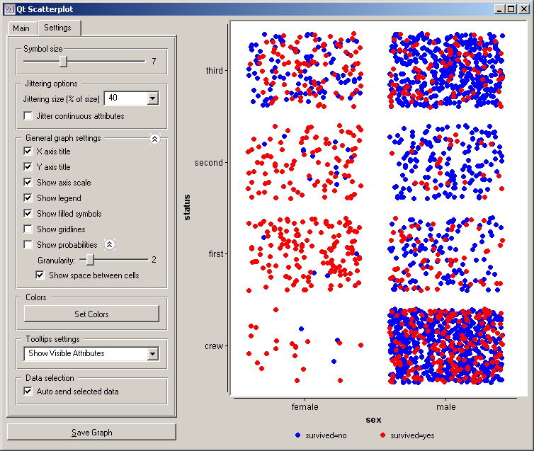Most of the scatterplot options are quite standard, like those for selecting attributes for point colors, labels, shape and size (Main pane), or those that control the display of various elements in the graph like axis title, grid lines, etc. (Settings pane). Beyond these, the Orange’s scatterplot also implements an intelligent visualization technique called VizRank that is invoked through VizRank button in Main tab.
Intelligent Data Visualization
If a data set has many attributes, it is impossible to manually scan through all the pairs of attributes to find interesting scatterplots. Intelligent data visualizations techniques are about finding such visualizations automatically. Orange’s Scatterplot includes one such tool called VizRank ([1]), that can be in current implementation used only with classification data sets, that is, data sets where instances are labeled with a discrete class. The task of optimization is to find those scatterplot projections, where instances with different class labels are well separated. For example, for a data set brown-selected.tab (comes with Orange installation) the two attributes that best separate instances of different class are displayed in the snapshot below, where we have also switched on the Show Probabilities option from Scatterplot’s Settings pane. Notice that this projection appears at the top of Projection list, most interesting first, followed by a list of other potentially interesting projections. Selecting each of these would change the projection displayed in the scatterplot, so the list and associated projections can be inspected in this way.
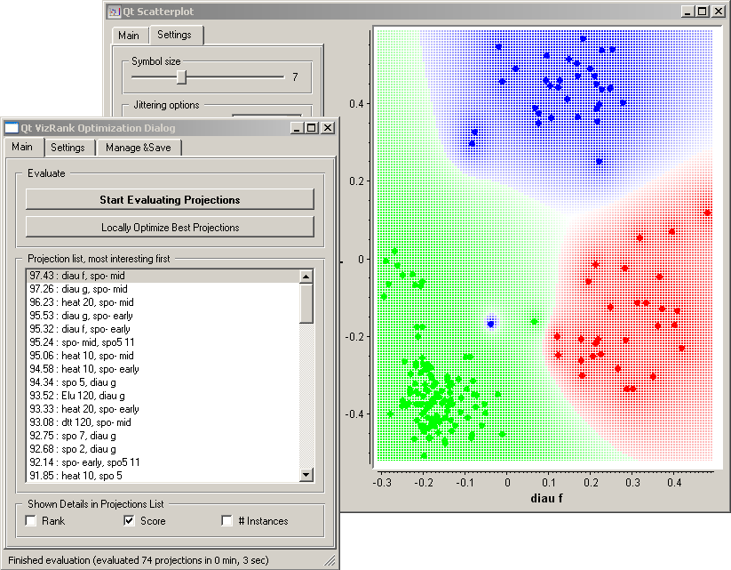The number of different projections that can be considered by VizRank may be quite high. VizRank searches the space of possible projections heuristically. The search is invoked by pressing Start Evaluating Projections, which may be stopped anytime. Search through modification of top-rated projections (replacing one of the two attributes with another one) is invoked by pressing a Locally Optimize Best Projections button.
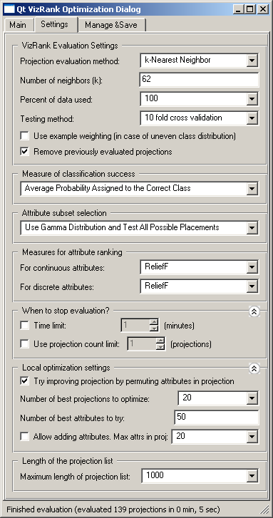VizRank’s options are quite elaborate, and if you are not the expert in machine learning it would be best to leave them at their defaults. The options are grouped according to the different aspects of the methods as described in [1]. The projections are evaluated through testing a selected classifier (Projection evaluation method default is k-nearest neighbor classification) using some standard evaluation technique (Testing method). For very large data set use sampling to speed-up the evaluation (Percent of data used). Visualizations will then be ranked according to the prediction accuracy (Measure of classification success ), in our own tests Average Probability Assigned to the Correct Class worked somehow better than more standard measures like Classification Accuracy or Brier Score. To avoid exhaustive search for data sets with many attributes, these are ranked by heuristics (Measure for attribute ranking), testing most likely projection candidates first. Number of items in the list of projections is controlled in Maximum length of projection list.
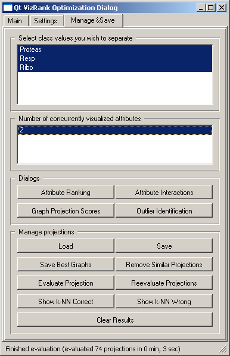A set of tools that deals with management and post-analysis of list of projections is available under Manage & Save tab. Here you may decide which classes the visualizations should separate (default set to separation of all the classes). Projection list can saved (Save in Manage projections group), loaded (Load), a set of best visualizations may be saved (Saved Best Graphs). Reevalutate Projections is used when you have loaded the list of best projections from file, but the actual data has changed since the last evaluation. For evaluating the current projection without engaging the projection search there is an Evaluate Projection button. Projections are evaluated based on performance of k-nearest neighbor classifiers, and the results of these evaluations in terms of which data instances were correctly or incorrectly classified is available through the two Show k-NN buttons.
Based on a set of interesting projections found by VizRank, a number of post-analysis tools is available. Attribute Ranking displays a graph which show how many times the attributes appear in the top-rated projections. Bars can be colored according to the class with maximal average value of the attribute. Attribute Interactions displays a heat map showing how many times the two attributes appeared in the top-rated projections. Graph Projection Scores displays the distribution of projection scores.
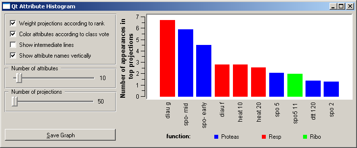 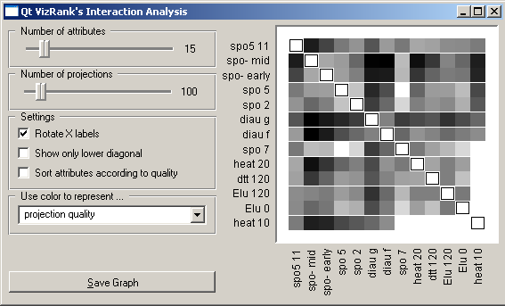 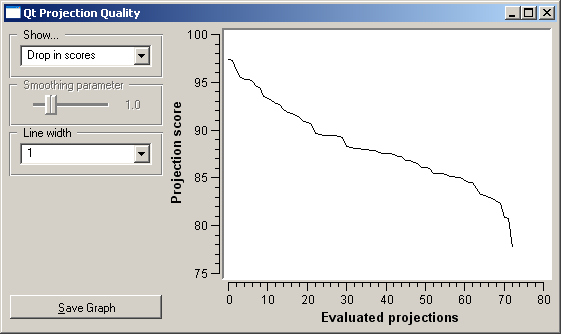List of best-rated projections may also be used for the search and analysis of outliers. The idea is that the outliers are those data instances, which are incorrectly classified in many of the top visualizations. For example, the class of the 33-rd instance in brown-selected.tab should be Resp, but this instance is quite often misclassified as Ribo. The snapshot below shows one particular visualization displaying why such misclassification occurs. Perhaps the most important part of the Outlier Identification window is a list in the lower left (Show predictions for all examples) with a list of candidates for outliers sorted by the probabilities of classification to the right class. In our case, the most likely outlier is the instance 171, followed by an instance 33, both with probabilities of classification to the right class below 0.5.
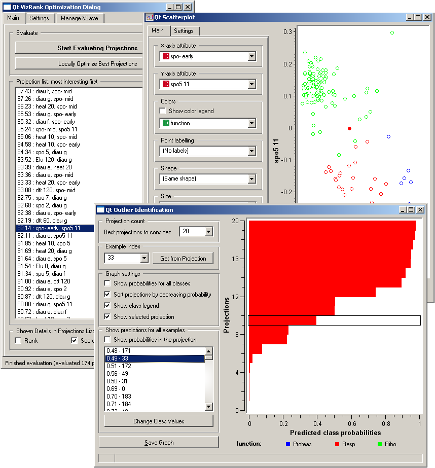Explorative Data Analysis
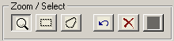Scatterplot, together with the rest of the Orange’s widget, provides for a explorative data analysis environment by supporting zooming-in and out of the part of the plot and selection of data instances. These functions are enabled through Zoom/Select toolbox. The default tool is zoom: left-click and drag on the plot area defines the rectangular are to zoom-in. Right click to zoom out. Next two buttons in this tool bar are rectangular and polygon selection. Selections are stacked and can be removed in order from the last one defined, or all at once (back-arrow and cross button from the tool bar). The last button in the tool bar is used to resend the data from this widget. Since this is done automatically after every change of the selection, this last function is not particularly useful. An example of a simple schema where we selected data instances from two polygon regions and send them to the Data Table widget is shown below. Notice that by counting the dots from the scatterplot there should be 12 data instances selected, whereas the data table shows 17. This is because some data instances overlap (have the same value of the two attributes used) - we could use Jittering to expose them.
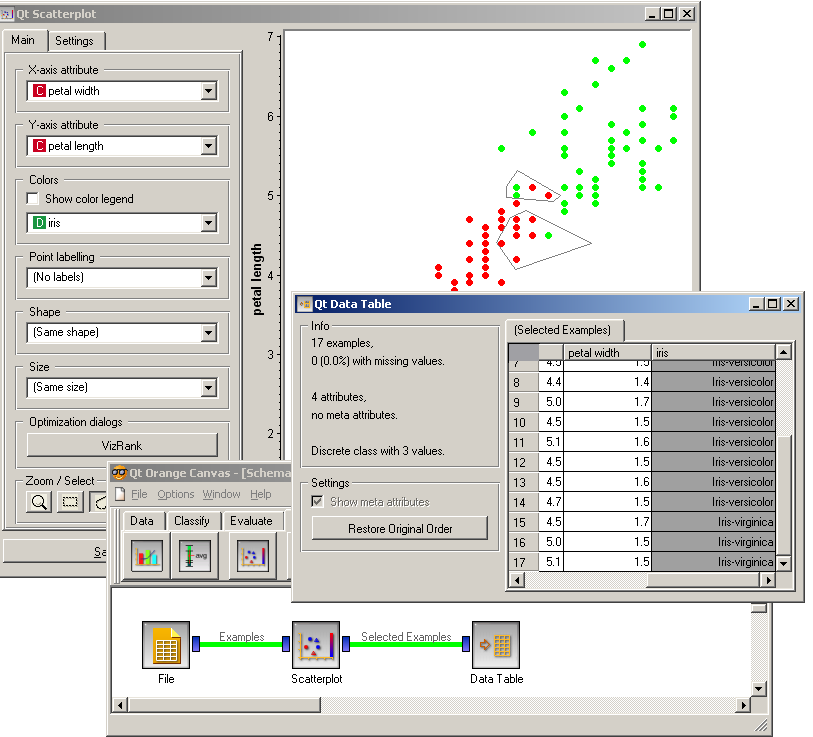Examples¶
Scatterplot can be nicely combined with other widgets that output a list of selected data instances. For example, a combination of classification tree and scatterplot, as shown below, makes for a nice exploratory tool displaying data instances pertinent to a chosen classification tree node (clicking on any node of classification tree would send a set of selected data instances to scatterplot, updating the visualization and marking selected instances with filled symbols).
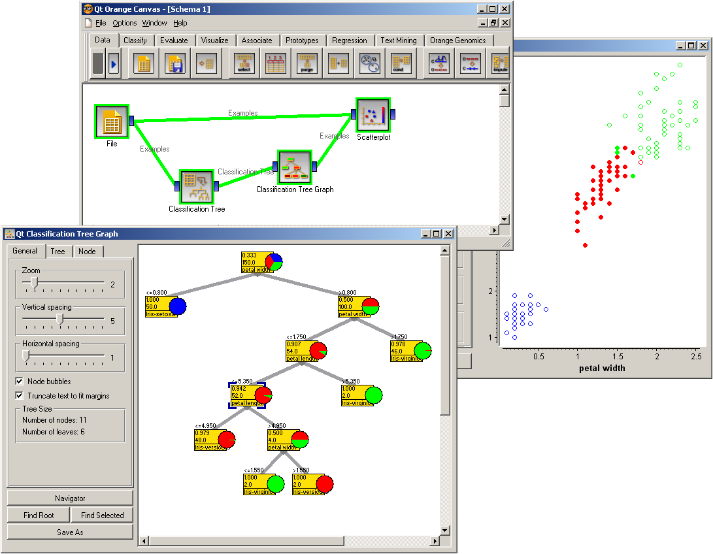